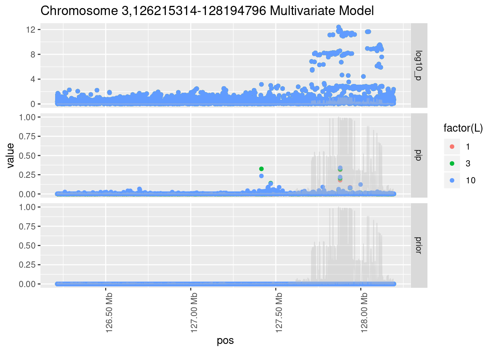
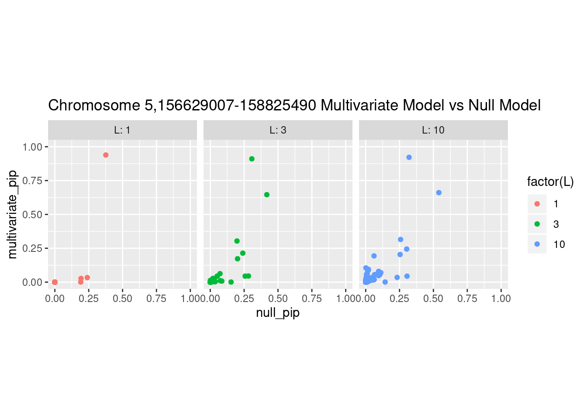
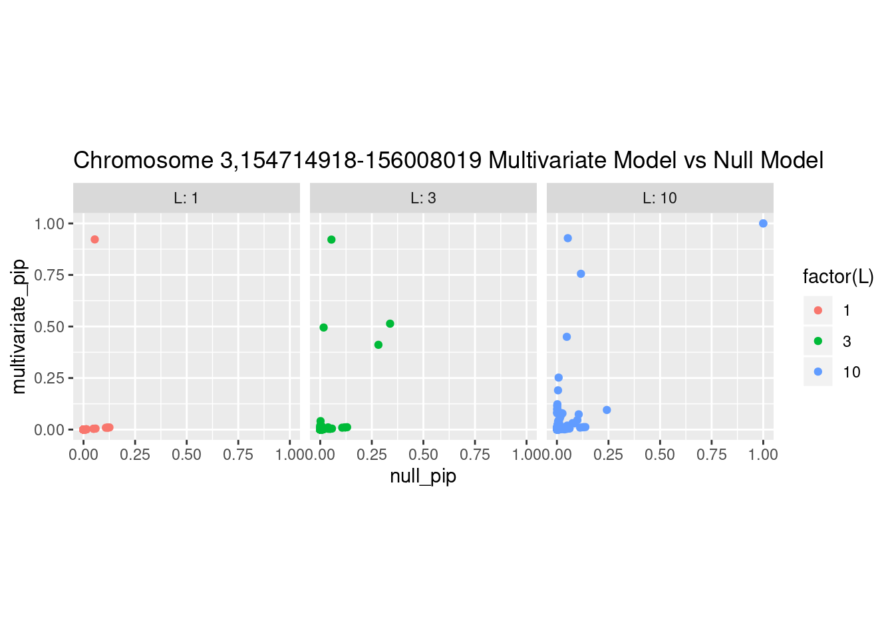

Fine Mapping using Torus and Susie
CreRecombinase
2019-07-18
Last updated: 2019-07-31
Checks: 6 1
Knit directory: ptb_workflowr/
This reproducible R Markdown analysis was created with workflowr (version 1.4.0). The Checks tab describes the reproducibility checks that were applied when the results were created. The Past versions tab lists the development history.
Great! Since the R Markdown file has been committed to the Git repository, you know the exact version of the code that produced these results.
Great job! The global environment was empty. Objects defined in the global environment can affect the analysis in your R Markdown file in unknown ways. For reproduciblity it’s best to always run the code in an empty environment.
The command set.seed(20190313) was run prior to running the code in the R Markdown file. Setting a seed ensures that any results that rely on randomness, e.g. subsampling or permutations, are reproducible.
Great job! Recording the operating system, R version, and package versions is critical for reproducibility.
Nice! There were no cached chunks for this analysis, so you can be confident that you successfully produced the results during this run.
Using absolute paths to the files within your workflowr project makes it difficult for you and others to run your code on a different machine. Change the absolute path(s) below to the suggested relative path(s) to make your code more reproducible.
| absolute | relative |
|---|---|
| /home/nwknoblauch/Dropbox/Repos/ptb_workflowr/cache/rcc2/ | cache/rcc2 |
| ~/Dropbox/Repos/ptb_workflowr/R/config.R | R/config.R |
| ~/Dropbox/Repos/ptb_workflowr/R/plan.R | R/plan.R |
| ~/Dropbox/Repos/ptb_workflowr/code/snp_gene.R | code/snp_gene.R |
Great! You are using Git for version control. Tracking code development and connecting the code version to the results is critical for reproducibility. The version displayed above was the version of the Git repository at the time these results were generated.
Note that you need to be careful to ensure that all relevant files for the analysis have been committed to Git prior to generating the results (you can use wflow_publish or wflow_git_commit). workflowr only checks the R Markdown file, but you know if there are other scripts or data files that it depends on. Below is the status of the Git repository when the results were generated:
Ignored files:
Ignored: (dellxps's conflicted copy 2019-07-30).Rhistory
Ignored: .Rhistory
Ignored: .Rproj.user/
Ignored: .drake/
Ignored: analysis/PTB_features (dellxps's conflicted copy 2019-06-19).Rmd
Ignored: cache/
Ignored: data/NA_character_.RDS
Ignored: data/ag_df.RDS
Ignored: data/annotations.h5
Ignored: data/big_hic_t.tsv.gz
Ignored: data/chr19_snpdata_hm3only.RDS
Ignored: data/eqtl_gwas_file.tsv.gz
Ignored: data/evd_list_chr19_hm3.RDS
Ignored: data/exons.bed
Ignored: data/fat_eqtl.tsv.gz
Ignored: data/gencode.v28.annotation.gff3.gz
Ignored: data/genes.bed
Ignored: data/gwas_file.tsv.gz
Ignored: data/gwas_ptb_file.tsv.gz
Ignored: data/gwas_ptb_file_i.tsv.zstd
Ignored: data/gwas_scz_file.tsv.gz
Ignored: data/hic_t.tsv.gz
Ignored: data/little_gwas_i.tsv.zstd
Ignored: data/matched_snp.RDS
Ignored: data/new_cache_log.RDS
Ignored: data/ngwas_df.h5
Ignored: data/old_cache_log.RDS
Ignored: data/retd.RDS
Ignored: data/shuffeqtl_gwas_file.tsv.gz
Ignored: data/split_d.h5
Ignored: data/sub_gwas_ptb.tsv.gz
Ignored: data/susie_r.RDS
Ignored: data/ut_eqtl.tsv.gz
Ignored: old_index/
Untracked files:
Untracked: .drake_history/
Untracked: analysis/23_and_me.Rmd
Untracked: analysis/LD.Rmd
Untracked: analysis/awd.RData
Untracked: analysis/dataset_SNPs_mismatches-reference.txt
Untracked: analysis/enrichment_analysis.Rmd
Untracked: analysis/ldshrink_drake.Rmd
Untracked: analysis/mws.RData
Untracked: analysis/test_knit_code.Rmd
Untracked: analysis/test_knit_code2.Rmd
Untracked: code/
Untracked: config.yml
Untracked: config/four_features.yaml
Untracked: config/four_features_repro_ctrl.yaml
Untracked: config/four_features_repro_dec.yaml
Untracked: extract_results_main.R
Untracked: extract_sigma_g.R
Untracked: false_positives.dsc
Untracked: power.dsc
Untracked: ptb_cache/
Untracked: sigma_g.dsc
Untracked: sim_results/
Untracked: sub_drake.sh
Untracked: summarize_sigma_g.R
Unstaged changes:
Modified: .Rprofile
Modified: R/functions.R
Modified: R/plan.R
Modified: analysis/PTB_features.Rmd
Modified: analysis/multifeature.Rmd
Modified: analysis/multifeature_update.Rmd
Modified: config/workflow_params_desktop.yaml
Modified: config/workflow_params_xps.yaml
Modified: make.R
Modified: slurm_clustermq.tmpl
Modified: torque_clustermq.tmpl
Note that any generated files, e.g. HTML, png, CSS, etc., are not included in this status report because it is ok for generated content to have uncommitted changes.
These are the previous versions of the R Markdown and HTML files. If you’ve configured a remote Git repository (see ?wflow_git_remote), click on the hyperlinks in the table below to view them.
| File | Version | Author | Date | Message |
|---|---|---|---|---|
| Rmd | a219e41 | CreRecombinase | 2019-07-31 | workflowr::wflow_publish(“analysis/marginal_joint.Rmd”) |
| html | 54113f5 | CreRecombinase | 2019-07-31 | Build site. |
| Rmd | fbc8f08 | CreRecombinase | 2019-07-31 | workflowr::wflow_publish(“analysis/marginal_joint.Rmd”) |
| html | 9c678d9 | CreRecombinase | 2019-07-31 | Build site. |
| Rmd | d76e12d | CreRecombinase | 2019-07-31 | workflowr::wflow_publish(“analysis/marginal_joint.Rmd”) |
| html | 630ae91 | CreRecombinase | 2019-07-31 | Build site. |
| Rmd | 9b86005 | CreRecombinase | 2019-07-31 | workflowr::wflow_publish(“analysis/marginal_joint.Rmd”) |
| html | bc02539 | CreRecombinase | 2019-07-31 | Build site. |
| Rmd | a233da4 | CreRecombinase | 2019-07-31 | workflowr::wflow_publish(“analysis/marginal_joint.Rmd”) |
| html | 1d0bf62 | CreRecombinase | 2019-07-31 | Build site. |
| html | e0fc848 | CreRecombinase | 2019-07-31 | Build site. |
| Rmd | 1fbd59f | CreRecombinase | 2019-07-31 | workflowr::wflow_publish(“analysis/marginal_joint.Rmd”) |
| html | 2755ec9 | CreRecombinase | 2019-07-31 | Build site. |
| Rmd | 7f7ddfd | CreRecombinase | 2019-07-31 | workflowr::wflow_publish(“analysis/marginal_joint.Rmd”) |
| html | 206221d | CreRecombinase | 2019-07-31 | Build site. |
Introduction
In this document I will summarize my current progress analyzing the latest the GWAS results. I’ll explain briefly how torus does enrichment analysis (and what I mean by “enrichment analysis”). Then I’ll go over the results of that analysis. After that I’ll give a brief overview of susie, and then I’ll show some results. Before any of that, I’m going to talk a little bit about the dataset(s) I’m working with.
The GWAS

manhattan
A few numbers about the GWAS summary statistics:
14991824variants- top hit has \(p\)=3.03610^{-26}
p<1e-8on chromosomes 1,3,5
#Enrichment analysis and fine mapping pipeline overview
- Estimate the relationship between a particular genomic annotation (e.g ATAC-seq peaks) and GWAS significance genome-wide (Torus)
- Use the enrichment estimate to specify a per-variant prior.
- Using the prior and a reference LD panel, identify putative causal variants (
susie)
For both the enrichment analysis and the fine mapping, the genome is broken in to chunks according to approximately independent blocks as determined by ldetect. These blocks are then broken into blocks no greater than 50000 and no less than data_config$min_snp. For torus (enrichment) there is an assumption that there is at most 1 causal variant per chunk, and for susie (fine-mapping) the assumption is that there are at most \(L\), where \(L\) is a tuneable parameter. I ran susie with 3 values of \(L\): 1, 3 and 10. These assumptions make chunk size an important parameter when performing either fine mapping or enrichment analysis.
Epigenomic Data
Noboru has provided me with bed file annotations of the genome generated from the various experiments performed on the cell lines.
- ATAC seq
- H3K4me1 chip
- H3K4me3 chip
- H3K27ac chip
Within these categories there are three subcategories:
- Per-cell-line. Each cell line was either a control (
ctr) or underwent decidualizationdec. - Annotations consistent across the three control or decidualized cell line samples.
- Differental peaks. Peaks that have increased read counts in decidualized over control
In addition I have:
- Endometrial eQTL (Ober Lab)
- Hi-C from one cell line
hic_all_interacting_DT1_dTL4_D_48h - Annotation predicting repressive regions (from Hoffman et al.)
All the univariate results
Below are the univariate enrichment results. Using a single epigenomic dataset, I ran torus, and got an effect size and standard error of the enrichment of each dataset for GWAS hits. These are plotted below
Multivariate effect size estimates
Below are the multivariate effect size estimates for 5 features that came out of a forward selection.
It should be noted that not all of these features are significant when fit as 5 univariate models.
Fine mapping results
Each SNP that underwent fine mapping has a \(p\)-value, a prior, and a posterior inclusion probability, or pip, which is the predicted probability that the SNP is a causal variant (i.e that the effect size estimate is not a sample from the null distribution).
Below is an example of what this looks like for a region
Susie plots of top regions
| Version | Author | Date |
|---|---|---|
| 9c678d9 | CreRecombinase | 2019-07-31 |

| Version | Author | Date |
|---|---|---|
| 9c678d9 | CreRecombinase | 2019-07-31 |
| Version | Author | Date |
|---|---|---|
| 9c678d9 | CreRecombinase | 2019-07-31 |
| Version | Author | Date |
|---|---|---|
| 9c678d9 | CreRecombinase | 2019-07-31 |
| Version | Author | Date |
|---|---|---|
| 9c678d9 | CreRecombinase | 2019-07-31 |
What is the effect of the prior?
How does the pip change as a consequence of the prior? I ran susie using a prior derived from the enrichment model and compared it to a result from running with a uniform prior.
Joining, by = "region_id"
Joining, by = "region_id"
| Version | Author | Date |
|---|---|---|
| 9c678d9 | CreRecombinase | 2019-07-31 |
Joining, by = "region_id"
| Version | Author | Date |
|---|---|---|
| 9c678d9 | CreRecombinase | 2019-07-31 |
Joining, by = "region_id"
| Version | Author | Date |
|---|---|---|
| 9c678d9 | CreRecombinase | 2019-07-31 |
Joining, by = "region_id"
| Version | Author | Date |
|---|---|---|
| 9c678d9 | CreRecombinase | 2019-07-31 |
| Version | Author | Date |
|---|---|---|
| 9c678d9 | CreRecombinase | 2019-07-31 |
And here’s another perspective on the same data
Joining, by = "region_id"
Joining, by = "region_id"
Joining, by = "region_id"
Joining, by = "region_id"
Joining, by = "region_id"

sessionInfo()R version 3.6.1 (2019-07-05)
Platform: x86_64-pc-linux-gnu (64-bit)
Running under: Manjaro Linux
Matrix products: default
BLAS/LAPACK: /usr/lib/libopenblas_haswellp-r0.3.6.so
locale:
[1] LC_CTYPE=en_US.UTF-8 LC_NUMERIC=C
[3] LC_TIME=en_US.UTF-8 LC_COLLATE=en_US.UTF-8
[5] LC_MONETARY=en_US.UTF-8 LC_MESSAGES=en_US.UTF-8
[7] LC_PAPER=en_US.UTF-8 LC_NAME=C
[9] LC_ADDRESS=C LC_TELEPHONE=C
[11] LC_MEASUREMENT=en_US.UTF-8 LC_IDENTIFICATION=C
attached base packages:
[1] stats graphics grDevices utils datasets methods base
other attached packages:
[1] tidyselect_0.2.5 RSSp_0.9.0.9000 ldmap_0.0.0.9000
[4] daprcpp_1.0.0.9000 ldshrink_1.0-1 bigsnpr_0.11.5
[7] bigstatsr_0.9.9 vroom_1.0.2.9000 RSQLite_2.1.1
[10] glue_1.3.1 drake_7.4.0.9000 fs_1.3.1
[13] susieR_0.8.1.0525 here_0.1 forcats_0.4.0
[16] stringr_1.4.0 dplyr_0.8.3 purrr_0.3.2
[19] readr_1.3.1 tidyr_0.8.3 tibble_2.1.3
[22] tidyverse_1.2.1 dbplyr_1.4.2 MonetDBLite_0.6.1
[25] plotly_4.9.0 ggplot2_3.2.0 gtable_0.3.0
[28] gridExtra_2.3 scales_1.0.0
loaded via a namespace (and not attached):
[1] colorspace_1.4-1 RcppEigen_0.3.3.5.0 rprojroot_1.3-2
[4] XVector_0.24.0 GenomicRanges_1.36.0 rstudioapi_0.10
[7] DT_0.7 bit64_0.9-7 lubridate_1.7.4
[10] xml2_1.2.0 codetools_0.2-16 knitr_1.23
[13] jsonlite_1.6 workflowr_1.4.0 broom_0.5.2
[16] shiny_1.3.2 compiler_3.6.1 httr_1.4.0
[19] backports_1.1.4 assertthat_0.2.1 Matrix_1.2-17
[22] lazyeval_0.2.2 cli_1.1.0 later_0.8.0
[25] htmltools_0.3.6 tools_3.6.1 igraph_1.2.4.1
[28] GenomeInfoDbData_1.2.1 reshape2_1.4.3 Rcpp_1.0.2
[31] cellranger_1.1.0 nlme_3.1-140 iterators_1.0.10
[34] crosstalk_1.0.0 wavethresh_4.6.8 xfun_0.7
[37] rvest_0.3.4 mime_0.7 zlibbioc_1.30.0
[40] MASS_7.3-51.4 hms_0.4.2 promises_1.0.1
[43] parallel_3.6.1 yaml_2.2.0 memoise_1.1.0
[46] stringi_1.4.3 highr_0.8 S4Vectors_0.22.0
[49] foreach_1.4.4 BiocGenerics_0.30.0 filelock_1.0.2
[52] storr_1.2.2 GenomeInfoDb_1.20.0 rlang_0.4.0.9000
[55] pkgconfig_2.0.2 bitops_1.0-6 evaluate_0.14
[58] lattice_0.20-38 htmlwidgets_1.3 labeling_0.3
[61] cowplot_1.0.0 bit_1.1-14 plyr_1.8.4
[64] magrittr_1.5 R6_2.4.0 IRanges_2.18.1
[67] generics_0.0.2 base64url_1.4 txtq_0.1.3
[70] DBI_1.0.0 pillar_1.4.2 haven_2.1.0
[73] whisker_0.3-2 withr_2.1.2 RCurl_1.95-4.12
[76] modelr_0.1.4 crayon_1.3.4 rmarkdown_1.13
[79] grid_3.6.1 readxl_1.3.1 data.table_1.12.2
[82] blob_1.1.1 git2r_0.26.1 digest_0.6.20
[85] xtable_1.8-4 httpuv_1.5.1 RcppParallel_4.4.3
[88] stats4_3.6.1 munsell_0.5.0 viridisLite_0.3.0